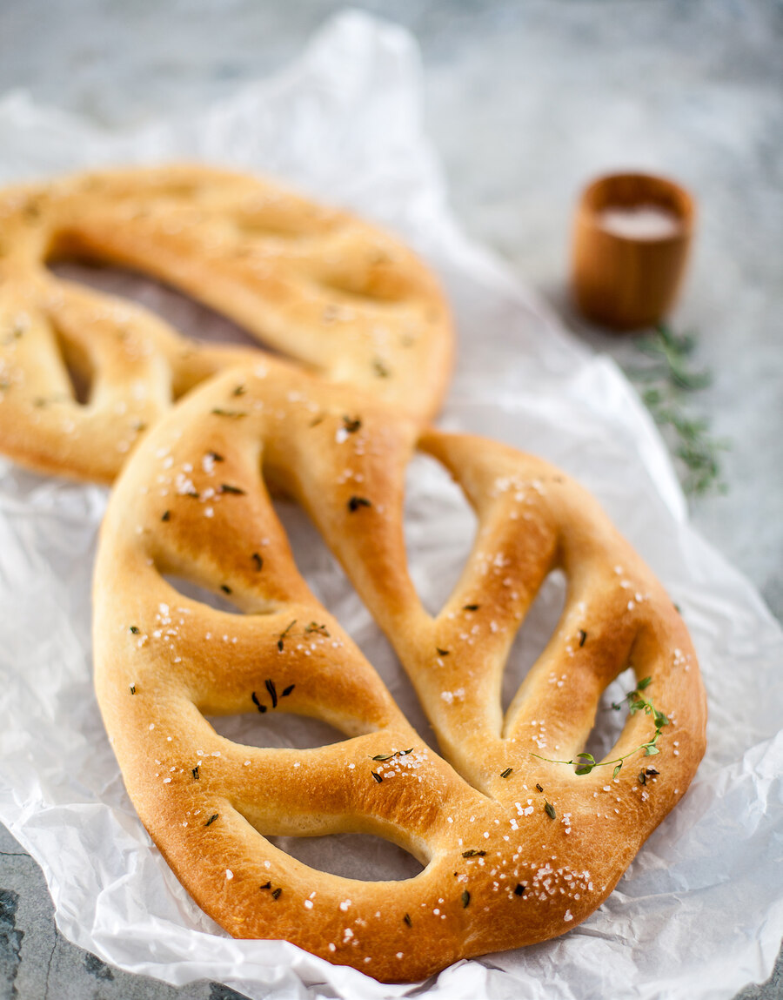

Этот ароматный французский хлеб прост и быстр в приготовлении, в то же время он очень эффектный! За что я его и люблю. Он прекрасно сочетается с сырами, мясом на гриле.
Для этого хлеба лучше использовать муку с высоким содержанием белка (11 и выше), но и с обычной мукой высшего сорта все получится.
Классический рецепт хлеба фугас включает муку, воду, соль, дрожжи и оливковое масло. Но однажды я попробовала испечь этот хлеб на картофельной воде (оставшейся от варки картофеля), и мне очень понравилось: получился невероятно воздушный мякиш и супертонкая хрустящая корочка! Классический фугас считается «хлебом одного дня», то есть на следующий день он не такой вкусный. Но, благодаря картофельной воде, он и на следующий день прекрасен, его лишь нужно немного оживить, например, прогреть на гриле (или под грилем, если речь идет о духовке).
Кстати, в качестве добавок можно использовать не только соль и травы, но и оливки, только их следует разрезать на 3–4 части (берите те, что без косточки).